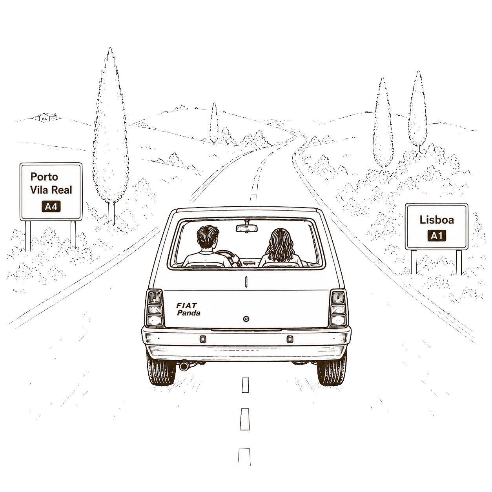

Como Chegar
Vila Real
Há estacionamento no local e a entrada será feita pela entrada principal da casa, a poucos metros do estacionamento. Para quem vier de Lisboa, sugerimos o caminho pela A1 até ao Porto e depois sigam pela CREP, que a viagem é mais rápida e cómoda.
Google Maps